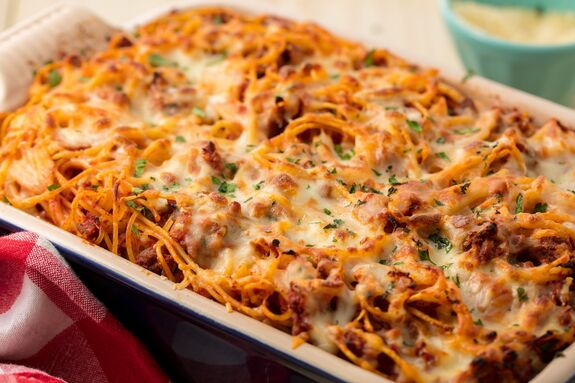

Baked Spaghetti Recipe

Description
This super simple baked spaghetti casserole has three main components:
spaghetti (of course), meat sauce, and cheese. What more do you really need?
Ingredients
- 1 yellow onion
- 3 cloves garlic
- 1/2 lb. Italian Sausage
- 3 oz. tomato paste
- 1 28oz. can crushed tomatoes
- 1/2 tsp Italian seasoning
- 1/2 tsp salt
- 1/2 cup water
- 12 oz. spaghetti
- 1 cup small curd cottage cheese
- 1/4 cup grated Parmesan
- 1/4 tsp freshly cracked black pepper
- 1 cup shredded mozzarella
- 1 cup shredded mozzarella
Steps
- Dice the onion and mince the garlic.
- Add the olive oil to a large skillet and heat over medium. Add the Italian sausage and cook until browned.
- Add the chopped onion and minced garlic to the skillet and continue to stir and cook until the onions are soft and translucent.
- Add the tomato paste, crushed tomatoes, Italian seasoning, salt, and water. Stir to combine, then allow the sauce to come up to a simmer. Reduce the heat to medium-low and let the sauce simmer while you cook the pasta.
- Preheat the oven to 350 degrees. Add ½ Tbsp salt to a large pot of water and bring it to a boil over high heat. Add the spaghetti and continue to boil until the pasta is tender, but not fully cooked. Drain the pasta in a colander.
- Add the drained pasta to the sauce and stir to combine.
- Combine the cottage cheese, Parmesan, and pepper in a bowl.
- Lightly grease an 8×11" casserole dish. Layer in half of the spaghetti and sauce, then top with the cottage cheese mixture. Add the second half of the spaghetti and sauce, then top with the shredded mozzarella.
- Cover the dish with foil then bake the spaghetti for 30 minutes. Top the spaghetti with chopped parsley, if desired. Slice into six pieces, then serve!